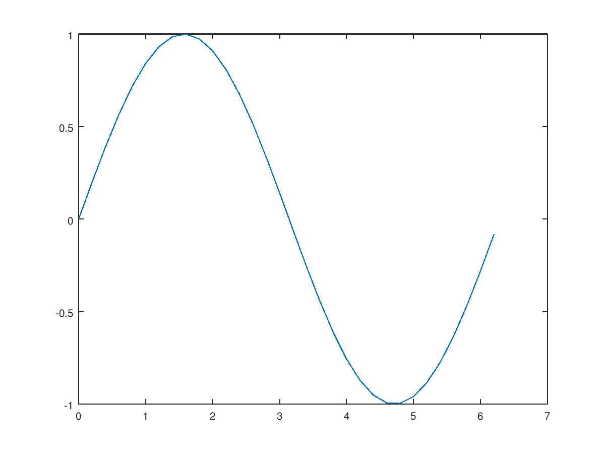

<!DOCTYPE html>
<html>
<head>
<meta charset="UTF-8">
<title>publish your Code with GNU Octave</title>
<script type="text/x-mathjax-config">
MathJax.Hub.Config({
  tex2jax: { inlineMath: [['$','$'], ['\\(','\\)']] },
  TeX: { equationNumbers: { autoNumber: 'all' } }
});
</script>
<script type="text/javascript" async src="https://cdn.mathjax.org/mathjax/latest/MathJax.js?config=TeX-MML-AM_CHTML"></script>

<style>
body > * {
  max-width: 42em;
}
body {
  font-family: "Roboto Condensed", sans-serif;
  padding-left: 7.5em;
  padding-right: 7.5em;
}
pre, code {
  max-width: 50em;
  font-family: monospace;
}
pre.oct-code {
  border: 1px solid Grey;
  padding: 5px;
}
pre.oct-code-output {
  margin-left: 2em;
}
span.comment {
  color: ForestGreen;
}
span.keyword {
  color: Blue;
}
span.string {
  color: DarkOrchid;
}
footer {
  margin-top: 2em;
  font-size: 80%;
}
a, a:visited {
  color: Blue;
}
h2 {
  font-family: "Roboto Condensed", serif;
  margin-top: 1.5em;
}
h2 a, h2 a:visited {
  color: Black;
}
</style>

</head>
<body>
<h1>publish your Code with GNU Octave</h1>

<p>The <a href="https://www.gnu.org/software/octave/doc/interpreter/XREFpublish.html">publish</a> function was added to
<a href="https://www.gnu.org/software/octave"><b>GNU Octave</b></a> 4.2.0 back in last
November.  This file should demonstrate some of it's functionality.</p>

<h2>Contents</h2>
<ul>
<li><a href="#node1">First steps - text blocks, titles, and sections</a></li>
<li><a href="#node2">Code evaluation with display of output</a></li>
<li><a href="#node3">Text block formatting</a></li>
<li><a href="#node4">Bold, italic, and monospaced text</a></li>
<li><a href="#node5">Hyperlinks</a></li>
<li><a href="#node6">Trademark symbols</a></li>
<li><a href="#node7">Bulleted lists</a></li>
<li><a href="#node8">Numbered lists</a></li>
<li><a href="#node9">Preformatted text</a></li>
<li><a href="#node10">Octave Code</a></li>
<li><a href="#node11">Include Octave code files</a></li>
<li><a href="#node12">Include graphics</a></li>
<li><a href="#node13">LaTeX formulae</a></li>
<li><a href="#node14">HTML Markup</a></li>
<li><a href="#node15">LaTeX Markup</a></li>
</ul>
<h2><a id="node1">First steps - text blocks, titles, and sections</a></h2>
<p>Using <code>publish</code>, each text block starts with two comment characters (<code>#</code> or
<code>%</code>).  Each directly following comment line will be part of that text block.
For example</p>

<pre class="pre-code"><span class="comment">%%         %%%        ##</span>
<span class="comment">% this,    % this,    # and this</span>
<span class="comment">%          %          #</span>
</pre>

<p>are perfect text blocks, without any difference.</p>

<p>Additionally, it is possible to group your published document into sections.
Therefore, just add a title to your text block:</p>

<pre class="pre-code"><span class="comment">%% Section title</span>
<span class="comment">%</span>
</pre>

<p>A text block without section title is a continuation of the previous section.</p>
<h2><a id="node2">Code evaluation with display of output</a></h2>
<p>The most powerful feature of the <code>publish</code> function is the automatic
evaluation of all Octave code, that is not contained in a text block.
Just enter the Octave code as always and the code will be presented with
syntax highlighting and any output, textual or plots, will be presented
below.</p>

<p>For example the code:</p>

<pre class="pre-code">x = 0:0.2:2*pi;
y = sin (x);
plot (x, y);     <span class="comment"># Plot some sine</span>
[x(end), y(end)] <span class="comment"># Display the last point</span>
</pre>

<p>will produce the output:</p>

<pre class="oct-code">x = 0:0.2:2*pi;
y = sin (x);
plot (x, y);     <span class="comment"># Plot some sine</span>
[x(end), y(end)] <span class="comment"># Display the last point</span>
</pre>

<pre class="oct-code-output">ans =
   6.200000  -0.083089
</pre>
<h2><a id="node3">Text block formatting</a></h2>
<p>The rest of this document is devoted to the formatting features of the
<code>publish</code> function.</p>
<h2><a id="node4">Bold, italic, and monospaced text</a></h2>
<p>Type &#42;BOLD TEXT&#42; for <b>BOLD TEXT</b>.</p>

<p>Type &#95;ITALIC TEXT&#95; for <i>ITALIC TEXT</i>.</p>

<p>Type &#124;MONOSPACED TEXT&#124; for <code>MONOSPACED TEXT</code>.</p>
<h2><a id="node5">Hyperlinks</a></h2>
<p>There are three types of hyperlinks.</p>

<p>1. A hyperlink <a href="https://www.gnu.org/software/octave">https://www.gnu.org/software/octave</a> where label and URL are
identical.  Created by:</p>

<pre class="pre-text">&lt;https://www.gnu.org/software/octave></pre>

<p>2. A hyperlink <a href="https://www.gnu.org/software/octave">GNU Octave</a> where label
and URL are different.  Created by:</p>

<pre class="pre-text">&lt;https://www.gnu.org/software/octave GNU Octave></pre>

<p>3. Referring to a specific Octave function by an hyperlink to the online
manual.  For <a href="https://www.gnu.org/software/octave/doc/interpreter/XREFplot.html">Octave's plot function</a> just type:</p>

<pre class="pre-text">&lt;octave:plot Octave's plot function></pre>
<h2><a id="node6">Trademark symbols</a></h2>
<p>Type <code>(</code><code>TM)</code> to get &trade; and type <code>(</code><code>R)</code> to get &reg;.</p>
<h2><a id="node7">Bulleted lists</a></h2>
<p>The input, sourrounded by empty text block lines</p>

<pre class="pre-text">* ITEM 1
* ITEM 2
* ITEM 3
* ITEM 4</pre>

<p>will produce a bulleteded list:</p>

<ul>
<li>ITEM 1</li>
<li>ITEM 2</li>
<li>ITEM 3</li>
<li>ITEM 4</li>
</ul>
<h2><a id="node8">Numbered lists</a></h2>
<p>The input, sourrounded by empty text block lines</p>

<pre class="pre-text"># ITEM 1
# ITEM 2
# ITEM 3
# ITEM 4</pre>

<p>will produce a bulleteded list:</p>

<ol>
<li>ITEM 1</li>
<li>ITEM 2</li>
<li>ITEM 3</li>
<li>ITEM 4</li>
</ol>
<h2><a id="node9">Preformatted text</a></h2>
<p>A text block line starting with two spaces and an empty preceding text block
line will be seen as preformatted text and printed verbatim as is:</p>

<pre class="pre-text">"To be, or not to be: that is the question:
Whether 'tis nobler in the mind to suffer
The slings and arrows of outrageous fortune,
Or to take arms against a sea of troubles,
And by opposing end them?  To die: to sleep;"</pre>

<pre class="pre-text">--"Hamlet" by W. Shakespeare</pre>
<h2><a id="node10">Octave Code</a></h2>
<p>A text block line starting with three spaces and an empty preceding text
block line will be seen as Octave code and printed verbatim as is with
syntax highlighting:</p>

<pre class="pre-code"><span class="keyword">for</span> i = 1:10
  disp (x)
<span class="keyword">endfor</span></pre>
<h2><a id="node11">Include Octave code files</a></h2>
<p>To display the verbatim and syntax highlighted content of an Octave code file,
no matter if function, class, or script, one can use the <code><a href="include">include</a></code> tag.
For example to include the content of a file named <code>script.m</code>, just type:</p>

<pre class="pre-text">&lt;include>script.m&lt;/include></pre>

<p>to see it's content:</p>

<pre class="pre-code"><span class="comment">## My script</span>
<span class="comment">#</span>
<span class="comment"># *Row* vector creation.</span>
<span class="comment">##</span>

a = 1:5

<span class="comment">%%</span>
<span class="comment">% Using the <octave:plot plot funtion>.</span>
<span class="comment">%</span>

x = 0:.2:2*pi;
y = sin (x);
plot (x,y)
</pre>
<h2><a id="node12">Include graphics</a></h2>
<p>To include a graphic, say <code>img.png</code>, just type:</p>

<pre class="pre-text">&lt;&lt;img.png>></pre>

<p>and make sure, that output document can find this graphic.</p>
<h2><a id="node13">LaTeX formulae</a></h2>
<p>To display LaTeX set formulae, just sourround the formular by a single dollar
sign <code>&#36;</code> for an inline equation, for example
$e^{x} = \sum_{k = 0}^{\infty} \frac{x^{k}}{k!}$ or by two dollar signs <code>$$</code>
for block display:</p>

<p>$$e^{x} = \sum_{k = 0}^{\infty} \frac{x^{k}}{k!}$$.</p>

<p>For HTML documents, the formulae are rendered by
<a href="https://www.mathjax.org">MathJax</a>.</p>
<h2><a id="node14">HTML Markup</a></h2>
<p>If the output is an HTML document, the content enclosed by the <code>&lt;html></code> tag
is printed as is.  This is useful, if it is desired to tweek the output with
native HTML markup.  For other output formats, this markup is ignored.</p>

<p>In an HTML document, this markup</p>

<pre class="pre-text">&lt;html>
&lt;table>&lt;tr>
&lt;td style="border: 1px solid black;">one&lt;/td>
&lt;td style="border: 1px solid black;">two&lt;/td>
&lt;/tr>&lt;/table>
&lt;/html></pre>

<p>will create a nice looking table:</p>
<table><tr>
<td style="border: 1px solid black;">one</td>
<td style="border: 1px solid black;">two</td>
</tr></table><h2><a id="node15">LaTeX Markup</a></h2>
<p>If the output is a PDF or LaTeX document, the content enclosed by the
<code>&lt;latex></code> tag is printed as is.  This is useful, if it is desired to tweek
the output with native LaTeX markup.  For other output formats, this markup
is ignored.</p>

<p>In an LaTeX document, this markup</p>

<pre class="pre-text">&lt;latex>
\begin{equation}
\begin{pmatrix}
1 & 2 \\ 3 & 4
\end{pmatrix}
\end{equation}
&lt;/latex></pre>

<p>will print a nice matrix:</p>

<footer>
<hr>
<a href="http://www.octave.org">Published with GNU Octave 4.3.0+</a>
</footer>
<!--
##### SOURCE BEGIN #####
%% publish your Code with GNU Octave
%
% The <octave:publish publish> function was added to
% <https://www.gnu.org/software/octave *GNU Octave*> 4.2.0 back in last
% November.  This file should demonstrate some of it's functionality.
%
%%

%% First steps - text blocks, titles, and sections
%
% Using |publish|, each text block starts with two comment characters (|#| or
% |%|).  Each directly following comment line will be part of that text block.
% For example
%
%   %%         %%%        ##
%   % this,    % this,    # and this
%   %          %          #
%
% are perfect text blocks, without any difference.
%
% Additionally, it is possible to group your published document into sections.
% Therefore, just add a title to your text block:
%
%   %% Section title
%   %
%
% A text block without section title is a continuation of the previous section.
%


%% Code evaluation with display of output
%
% The most powerful feature of the |publish| function is the automatic
% evaluation of all Octave code, that is not contained in a text block.
% Just enter the Octave code as always and the code will be presented with
% syntax highlighting and any output, textual or plots, will be presented
% below.
%
% For example the code:
%
%   x = 0:0.2:2*pi;
%   y = sin (x);
%   plot (x, y);     # Plot some sine
%   [x(end), y(end)] # Display the last point
%
% will produce the output:
%

x = 0:0.2:2*pi;
y = sin (x);
plot (x, y);     # Plot some sine
[x(end), y(end)] # Display the last point


%% Text block formatting
%
% The rest of this document is devoted to the formatting features of the
% |publish| function.
%


%% Bold, italic, and monospaced text
%
% Type &#42;BOLD TEXT&#42; for *BOLD TEXT*.
%
% Type &#95;ITALIC TEXT&#95; for _ITALIC TEXT_.
%
% Type &#124;MONOSPACED TEXT&#124; for |MONOSPACED TEXT|.
%


%% Hyperlinks
%
% There are three types of hyperlinks.
%
% 1. A hyperlink <https://www.gnu.org/software/octave> where label and URL are
% identical.  Created by:
%
%  &lt;https://www.gnu.org/software/octave>
%
% 2. A hyperlink <https://www.gnu.org/software/octave GNU Octave> where label
% and URL are different.  Created by:
%
%  &lt;https://www.gnu.org/software/octave GNU Octave>
%
% 3. Referring to a specific Octave function by an hyperlink to the online
% manual.  For <octave:plot Octave's plot function> just type:
%
%  &lt;octave:plot Octave's plot function>
%


%% Trademark symbols
%
% Type |(||TM)| to get (TM) and type |(||R)| to get (R).
%


%% Bulleted lists
%
% The input, sourrounded by empty text block lines
%
%  * ITEM 1
%  * ITEM 2
%  * ITEM 3
%  * ITEM 4
%
% will produce a bulleteded list:
%
% * ITEM 1
% * ITEM 2
% * ITEM 3
% * ITEM 4
%


%% Numbered lists
%
% The input, sourrounded by empty text block lines
%
%  # ITEM 1
%  # ITEM 2
%  # ITEM 3
%  # ITEM 4
%
% will produce a bulleteded list:
%
% # ITEM 1
% # ITEM 2
% # ITEM 3
% # ITEM 4
%


%% Preformatted text
%
% A text block line starting with two spaces and an empty preceding text block
% line will be seen as preformatted text and printed verbatim as is:
%
%  "To be, or not to be: that is the question:
%  Whether 'tis nobler in the mind to suffer
%  The slings and arrows of outrageous fortune,
%  Or to take arms against a sea of troubles,
%  And by opposing end them?  To die: to sleep;"
%
%  --"Hamlet" by W. Shakespeare
%


%% Octave Code
%
% A text block line starting with three spaces and an empty preceding text
% block line will be seen as Octave code and printed verbatim as is with
% syntax highlighting:
%
%   for i = 1:10
%     disp (x)
%   endfor
%


%% Include Octave code files
%
% To display the verbatim and syntax highlighted content of an Octave code file,
% no matter if function, class, or script, one can use the |<include>| tag.
% For example to include the content of a file named |script.m|, just type:
%
%  &lt;include>script.m&lt;/include>
%
% to see it's content:
%
% <include>script.m</include>
%


%% Include graphics
%
% To include a graphic, say |img.png|, just type:
%
%  &lt;&lt;img.png>>
%
% and make sure, that output document can find this graphic.
%


%% LaTeX formulae
%
% To display LaTeX set formulae, just sourround the formular by a single dollar
% sign |&#36;| for an inline equation, for example
% $e^{x} = \sum_{k = 0}^{\infty} \frac{x^{k}}{k!}$ or by two dollar signs |$$|
% for block display:
%
% $$e^{x} = \sum_{k = 0}^{\infty} \frac{x^{k}}{k!}$$.
%
% For HTML documents, the formulae are rendered by
% <https://www.mathjax.org MathJax>.
%


%% HTML Markup
%
% If the output is an HTML document, the content enclosed by the |&lt;html>| tag
% is printed as is.  This is useful, if it is desired to tweek the output with
% native HTML markup.  For other output formats, this markup is ignored.
%
% In an HTML document, this markup
%
%  &lt;html>
%  &lt;table>&lt;tr>
%  &lt;td style="border: 1px solid black;">one&lt;/td>
%  &lt;td style="border: 1px solid black;">two&lt;/td>
%  &lt;/tr>&lt;/table>
%  &lt;/html>
%
% will create a nice looking table:
%
% <html>
% <table><tr>
% <td style="border: 1px solid black;">one</td>
% <td style="border: 1px solid black;">two</td>
% </tr></table>
% </html>
%


%% LaTeX Markup
%
% If the output is a PDF or LaTeX document, the content enclosed by the
% |&lt;latex>| tag is printed as is.  This is useful, if it is desired to tweek
% the output with native LaTeX markup.  For other output formats, this markup
% is ignored.
%
% In an LaTeX document, this markup
%
%  &lt;latex>
%  \begin{equation}
%  \begin{pmatrix}
%  1 & 2 \\ 3 & 4
%  \end{pmatrix}
%  \end{equation}
%  &lt;/latex>
%
% will print a nice matrix:
%
% <latex>
% \begin{equation}
% \begin{pmatrix}
% 1 & 2 \\ 3 & 4
% \end{pmatrix}
% \end{equation}
% </latex>
%
##### SOURCE END #####
-->
</body>
</html>
